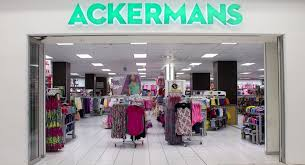

ACKERMANS
Ackermans is a South African chain of clothing retail stores. Founded in 1916 in Wynberg, Cape Town, Ackermans has over 700 stores across Southern Africa, including in Namibia, Botswana, Lesotho, Swaziland and Zambia, and is headquartered in Kuilsriver near Cape Town
WHERE WILL YOU FIND THEM
Are you looking for an Ackermans store near you? Use our store locator tool to find the nearest outlet in your city or town.